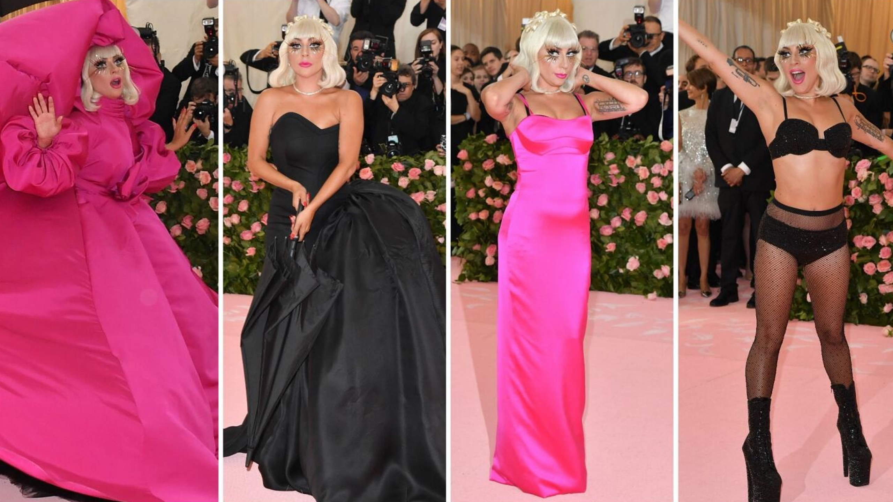
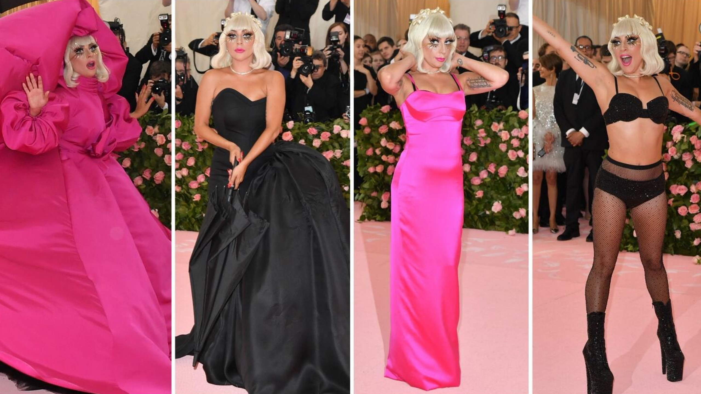
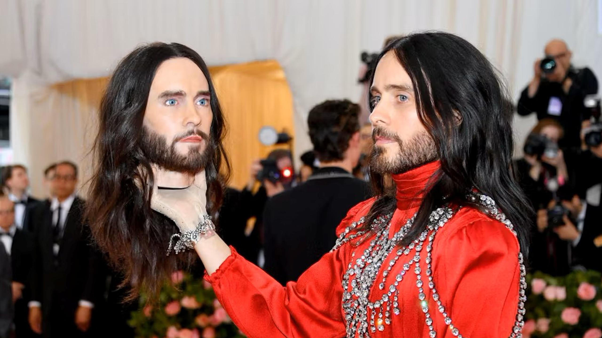
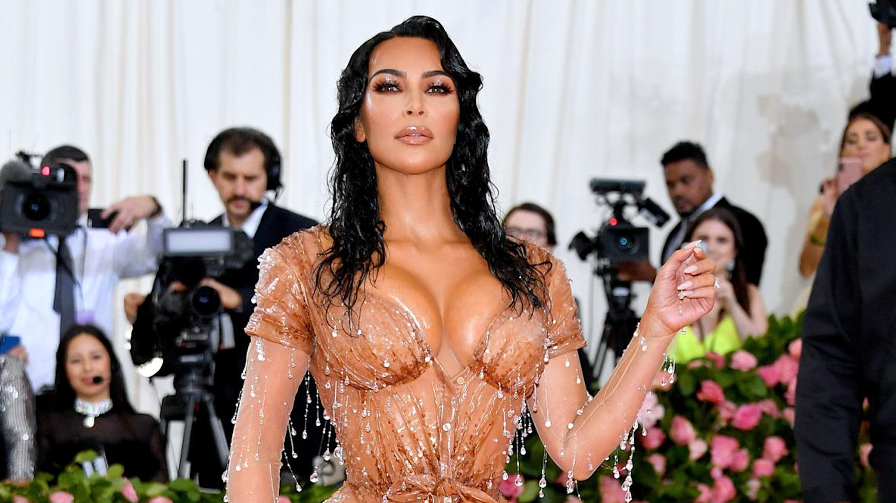

TOP 1
Lady Gaga
Vestida por Brandon Maxwell; sus cuatro capas sucesivas convierten el vestirse en un show en vivo, exaltando el camp como puro teatro de transformaciones.

Contanos cuál de estos artistas represento mejor esta tematica en la gala del MET
Susan Sontag, 1964. Dicho por Jeremy Scott para House of Moschino.
Lo camp es una estética de exageración e ironía. Susan Sontag lo llevó del margen al centro cultural, y la moda es su expresión más visible.
TOP 1
Vestida por Brandon Maxwell; sus cuatro capas sucesivas convierten el vestirse en un show en vivo, exaltando el camp como puro teatro de transformaciones.
TOP 2
Vestido por Gucci; la túnica enjoyada y su propia cabeza réplica celebran el narcisismo barroco y el exceso autoreferencial del camp.
TOP 3
Vestida por Thierry Mugler; el efecto “recién salida del agua” lleva la sensualidad hiperreal al límite, ejemplo de la artificialidad extrema del camp.
Vestido por Burberry by Riccardo Tisci; el traje‑gaban con máscara de ojos múltiples dramatiza la ilusión óptica y la identidad mutable que fascinan al camp.
Vestida por Tommy Hilfiger; el vestido de Cenicienta iluminado realiza un cuento pop en directo, reivindicando la fantasía teatral que anima la estética camp.